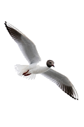

Hämtar statistik…

Fågelobservationer
📋 Dagslista
📊 Statistik
🥚 Häckning
Exempeldata – Statistik hämtas från Artportalen via proxy när det är klart
År
2026
2025
2024
2023
2022
Månad
Hela året
Januari
Februari
Mars
April
Maj
Juni
Juli
Augusti
September
Oktober
November
December
Län
Område
🗺 Visa karta
Välj en art eller rapportör i listan nedan för att visa platser på kartan.
Statistik för
–
Hämtad från Artportalen:
–
–
Arter
–
Observationer
–
Individer
–
Rapportörer
* Värdena beräknas ur de 200 vanligaste arterna och kan vara lägre än verkliga totaler.
📅 Observationer per månad
2025
Klicka på en månad för att filtrera
✕ Visa hela året
Mest observerade arter
2025 · Hela länet
Mest aktiva rapportörer
2025 · Hela länet
#
Rapportör
Arter
Obs.